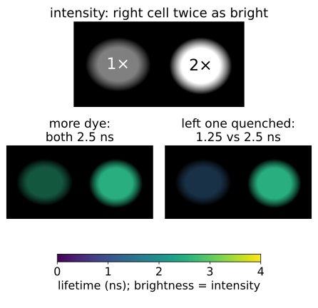
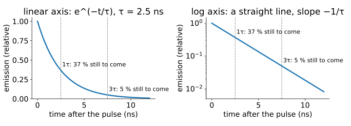
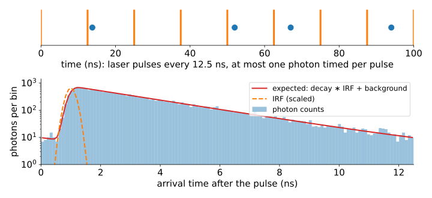
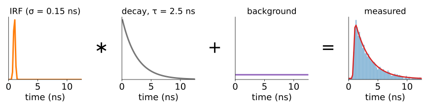
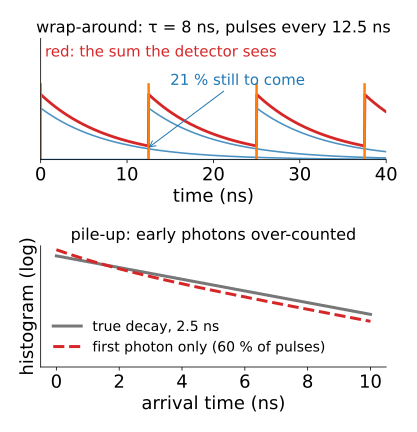
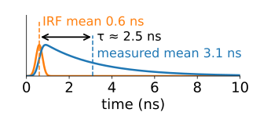
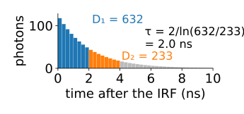
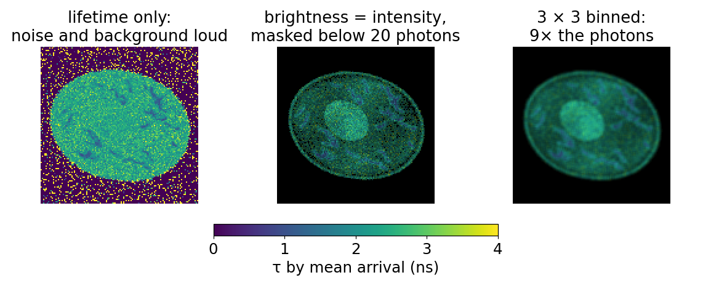

A fluorescence image says how much light came from each pixel. Today we ask how long the light took to come out, and why that is a better measurement for many questions.
The fluorescence lifetime τ: an exponential waiting time.
What changes τ (quenching, binding, FRET) and what does not (concentration, brightness).
Time-correlated single-photon counting: one photon per laser pulse, a histogram of arrival times.
The instrument response blurs that histogram: a convolution, as the PSF blurs an image.
Two quick estimates without fitting: the mean arrival time and two gates.
Slides titled The math give the formulas and proofs; the ideas are complete without them.
Two cells, one twice as bright as the other. Is there twice as much dye, or is the dye in a different state (bound, quenched, near a partner)?
Intensity mixes everything: concentration, laser power, detector gain, focus, bleaching, bleed-through from another dye.
The lifetime is a property of the molecule and its surroundings. To first order it does not depend on how many molecules there are.
A FLIM image (fluorescence lifetime imaging) stores both: intensity, plus “how long did the light take to come out” in every pixel.
The rest of the day: how to measure it, how to estimate it from few photons, and how to read it.

What a lifetime is
After a laser pulse puts a molecule in its excited state, it leaves that state with a constant chance per nanosecond, by emitting a photon or by losing the energy without light.

Many molecules: the emission decays exponentially, I(t) = A\,e^{-t/\tau}.
τ is the mean waiting time; typical values 0.3 to 5 ns.
After one τ, 37 % of the photons are still to come; after 3τ, 5 %. On a log axis the decay is a straight line.
The math: the exponential law
Excited molecules n(t) leave by light (rate k_r) or without light (rate k_{nr}):
Emission I(t) = k_r\,n(t). The quantum yield (photons per excitation) is Q = k_r/(k_r + k_{nr}) = k_r\tau.
One molecule’s photon arrives at a random time with density p(t) = \tau^{-1}e^{-t/\tau}: mean \tau, variance \tau^2.
Fraction still to come at time t: \int_t^\infty p = e^{-t/\tau}.
What changes τ, and what does not
Not (to first order): concentration, laser power, detector gain, out-of-focus dilution, bleed-through of another channel. They change how many photons, not when.
Yes: anything that opens a new way to lose the energy.
A quencher (oxygen, a halide ion, a nearby amino acid).
Binding to a protein, which can lengthen or shorten τ.
Q = k_r\tau: since k_r is unchanged, the quantum yield falls by the same factor as τ.
Example: \tau_0 = 4 ns with Q_0 = 0.8 gives k_r = 0.2\ \text{ns}^{-1}; a quencher that halves τ to 2 ns halves Q to 0.4.
Measuring nanoseconds: one photon per pulse

A pulsed laser fires every 12.5 ns (80 MHz). After each pulse a fast detector times at most one photon.
Repeat millions of times: a histogram of arrival times (say 64 or 256 bins over the 12.5 ns). Every bin is a Poisson count (recall camera noise).
A scanning microscope makes one histogram per pixel: an x \times y \times t stack, like the lambda stack of the unmixing day (least-squares unmixing) with time bins instead of wavelength bins.
Recall: blur is a convolution
From the PSF unit: the image is the object convolved with the PSF, plus noise. FLIM has the same forward model in time:
The laser pulse has a width and the detector’s timing jitters: the instrument response function (IRF), 0.1 to 0.3 ns wide. It is the PSF of the time axis.
Measured by recording light scattered straight back (a “zero-lifetime” sample).
The background (dark counts, room light) is flat in time.

The math: the expected histogram
The decay repeats every period T. A photon excited by an earlier pulse k periods ago arrives at t + kT; summing the geometric series over all earlier pulses gives the periodic decay on 0 \le t < T:
Wrap-around. When τ is not much shorter than the period, the tail of the previous decay is still arriving when the next pulse fires. A fraction e^{-T/\tau} is still to come: 4.4 % for τ = 4 ns at 80 MHz, 21 % for τ = 8 ns. The histogram is a sum over all earlier pulses (the periodic decay).
Pile-up. The electronics time only the first photon after a pulse. When two photons arrive in one period, the later one is lost, so early times are over-counted and τ looks shorter.
Rule of thumb: detect a photon in only a few percent of the pulses (1 % of pulses: 0.5 % of them hold a second photon).
So FLIM is slow: 1 000 photons in each of 256 × 256 pixels at 1 % of 80 MHz takes 82 s. Every photon counts (next unit).

Quick estimates without fitting
Mean arrival time. For one exponential the mean arrival time is τ. Means add under convolution, so subtract the IRF’s mean:
Example: measured mean 3.1 ns, IRF mean 0.6 ns: τ ≈ 2.5 ns.

Two gates. Count photons in two adjacent windows of equal width Δt, after the IRF: on an exponential, D_1/D_2 = e^{\Delta t/\tau}, so
\hat\tau = \frac{\Delta t}{\ln(D_1/D_2)}.
Example: 632 and 233 photons in 0–2 and 2–4 ns: τ = 2/ln 2.71 = 2.0 ns.

Both are fast. Both break with background (flat counts pull the mean towards the middle of the window and flatten the ratio), a short window, or two lifetimes. The next unit fits instead.
The math: means add, two gates
Means add under convolution. With h and p normalised to area 1,
Two gates. For I(t) = A e^{-t/\tau}, D_1 = \int_{a}^{a + \Delta t} I, D_2 = \int_{a + \Delta t}^{a + 2\Delta t} I = e^{-\Delta t/\tau}D_1. A background b per gate gives \frac{D_1 + b}{D_2 + b} < \frac{D_1}{D_2}, so \hat\tau is too long.
Try it: a lifetime image
Showing a lifetime image

Hue = lifetime, brightness = intensity (recall colour display): dim pixels fade to black instead of showing loud noise. Use a perceptual colour map, not a rainbow.
Mask pixels with too few photons: their lifetime is noise, or background.
Bin pixels (sum the histograms of a 3 × 3 or 5 × 5 neighbourhood) to gain photons, at the cost of resolution (recall denoising).
Time-gated cameras: instead of timing single photons, a wide-field camera takes one image per delay window; the two-gate formula per pixel gives a lifetime image quickly. Frequency-domain cameras come in the phasor unit.
Summary
The lifetime τ is the mean time a molecule stays excited; the emission decays as e^{-t/\tau}, a straight line on a log axis.
τ does not depend on how many molecules there are; it does change with quenching, binding, FRET and the environment, together with the brightness per molecule.
TCSPC: at most one photon timed per laser pulse; a histogram of arrival times per pixel, with Poisson counts.
Measured histogram = IRF ∗ decay + background: the forward model of the PSF, in time. The pulse train adds wrap-around; bright samples add pile-up.
Mean arrival time (minus the IRF’s mean) and two gates give quick estimates; background, short windows and mixtures bias them.